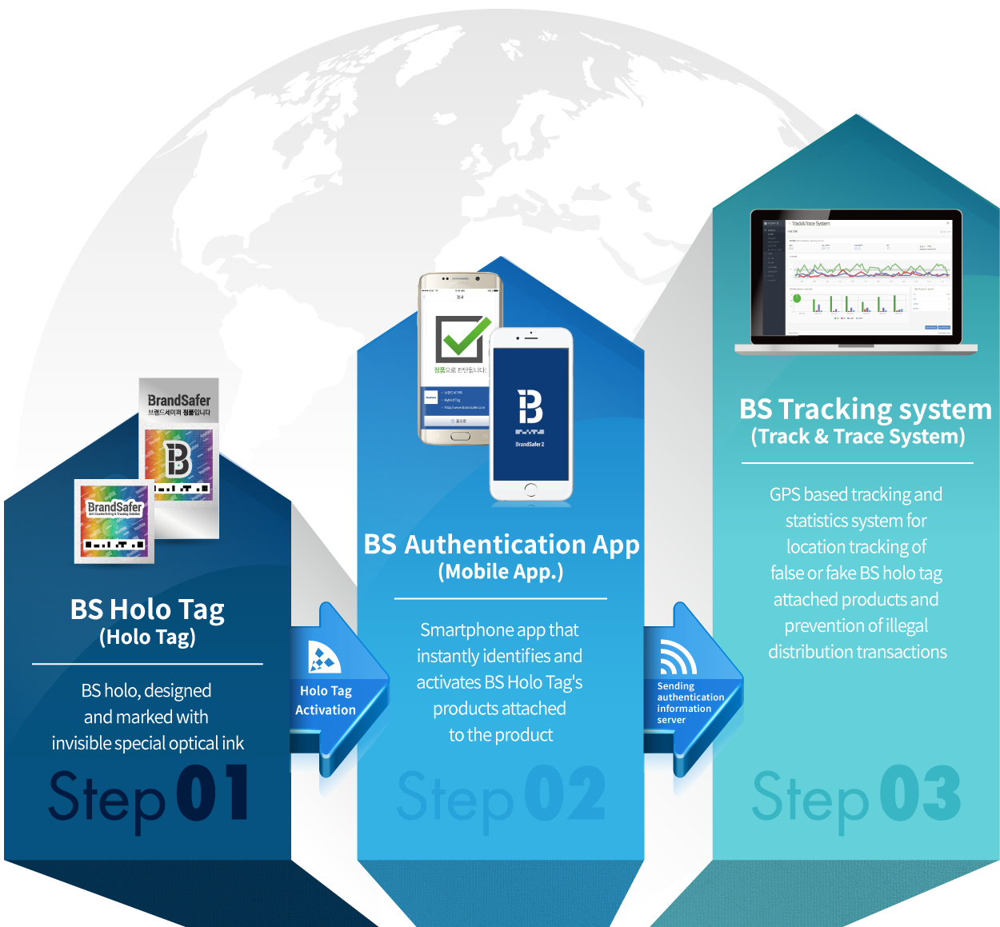

Brand Safer
In order to protect customers' brands and products, we are able to identify the current status of the product's manufacturing to sales and give the customer the ability to purchase genuine products, ultimately offering optimized solutions for each customer's needs.

BS Holo Tag
Forgery prevention technology, reliable method
Brand safer's BS Holo Tag technology is a special hologram based on the
invisible strong forgery prevention technology.
BS Holo Tag does not lose its ability to
identify genuine products even after a long period of time, and even if damaged by external factors such as fire, it can be legally trusted because there is no problem in discrimination when there is a minimum readable area.
BS Authentication App (Holo Tag Reader)
A convenient user-centric authentication application
Developed to be compatible with various popular smart phone models and operating systems, Holo Tag Reader analyzes the spectrum of BS holographic light reflected on the flash of a smartphone camera and provides an environment that allows users to directly distinguish forgery in real time.
BS tracking system
GPS-based tracking system, realtime solution
Since the product and location information that the consumer or clerk reads through the smartphone authentication app is transmitted to the T&T(Track & Trace)system, the enterprise operator has the advantage of acquiring the time and spatial information such as distribution route along with the result of discriminating the forgery and falsification of the product line in real time, and building and analyzing the data.